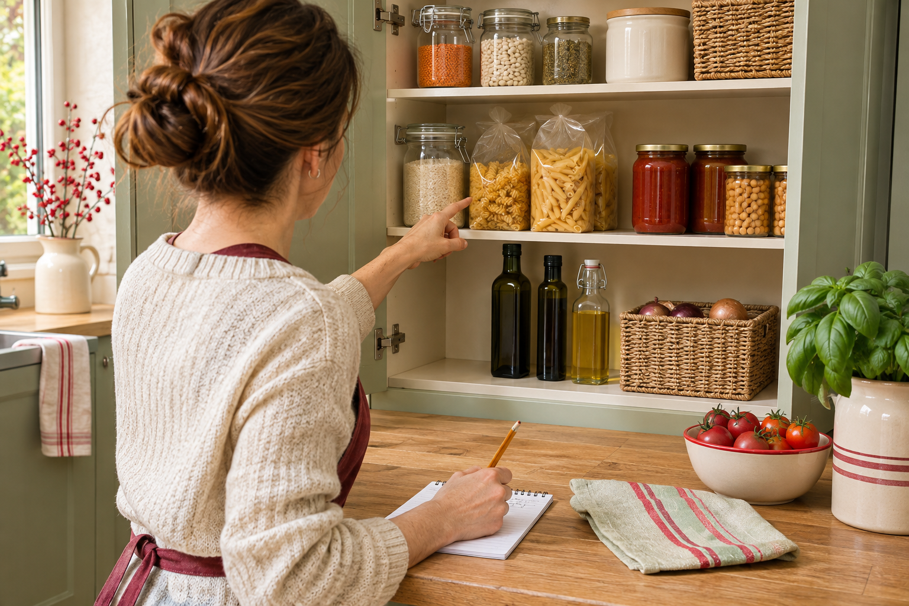

كيف تتجنّب شراء ما لديك بالفعل؟
قبل الخروج، راجع جميع أماكن التخزين والكميات المتبقية وقائمة التسوق.

راجع جميع الأماكن وما تبقّى من كل منتج
ابحث عن المنتج في الجرد واختر جميع أماكن التخزين. قد تكون المعكرونة التي لم تجدها في المطبخ محفوظة في خزانة أخرى. تختلف العبوة الكاملة عن عبوة بقي منها 50%. راجع الملاحظات أيضاً فقد تكون إحدى العبوات محجوزة لمناسبة.
استخدم القائمة وحدّثها
دوّن ما تحتاج إليه مع الكمية أو العلامة التجارية في السطر نفسه عند الحاجة. تشير الاقتراحات الخضراء إلى أصناف لديك منها كمية قد لا تكفي. قرّر ما إذا كنت تريد شراء المزيد. قبل السفر قد تفضّل استخدام الموجود. إذا أعددت القائمة على الحاسوب، انقل النسخة المحدّثة إلى الهاتف. لا يدمج التطبيق نسختَي الجرد تلقائياً، فتجنّب تعديلهما بشكل منفصل. بعد العودة سجّل المشتريات. وضع العلامة في المتجر يحدّث القائمة، بينما تسجيل المشتريات يحدّث الجرد.
ابدأ بجولة في الثلّاجة والمجمّد والخزانة. إذا خطّطت لطهي الأرز مرتين، افحص العبوة المفتوحة ثم ابحث عن عبوة احتياطية. يمكنك تقدير ربع كيس المعكرونة المتبقي بـ25٪ وتحديث النسبة بعد الاستخدام.